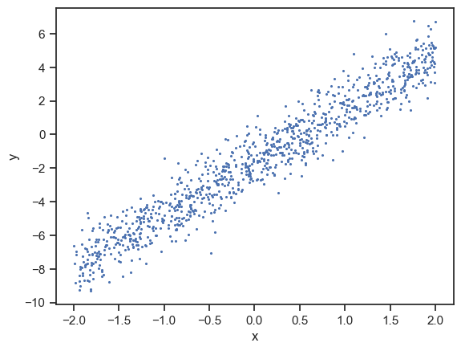

ニューラルネットワーク入門#
# 表データを扱うライブラリ
import pandas as pd
# 乱数を扱うライブラリ
import random
# グラフ描画ライブラリ
import seaborn as sns
import matplotlib.pyplot as plt
# グラフ描画のためのおまじない
sns.set()
sns.set_style('ticks')
%matplotlib inline
# データを読み込む
data_url = "https://raw.githubusercontent.com/hontolab-courses/ml-lecturenote/main/content/data/sgd-data.tsv"
df = pd.read_table(data_url, header=0, sep="\t")
# 可視化
sns.scatterplot(x=df["x"], y=df["y"], linewidth=0, s=5)
plt.show()

クイズ#
Q1: 最急降下法 for 複数パラメータ#
7章の例題2では直線の切片は既知（-1.59），傾きは未知として，傾き\(w_1\)を最急降下法によって求めた．
以下のコードは，傾き\(w_1\)，切片\(w_0\)ともに未知とした場合，\(w_1\)と\(w_0\)を最急降下法で求めるコードである．
コード中の関数gradient_w0およびgradient_descent_for_two_paramsの未完部分を完成させなさい．
# 傾きw_1の勾配
def gradient_w1(x_list, y_list, w1, w0):
grad_w1 = 0
# データを1個ずつ処理
for x, y in zip(x_list, y_list):
grad_w1 += 2 * (-x) * (y - w1 * x + w0)
return grad_w1
# 切片w_0の勾配
def gradient_w0(x_list, y_list, w1, w0):
grad_w0 = 0
# データを1個ずつ処理
for x, y in zip(x_list, y_list):
# ------------------
# 以下，コードを完成させる
# ここまで
# ------------------
return grad_w0
def gradient_descent_for_two_params(
x_list, y_list, alpha=0.0001, delta_threshold=1e-8, epoch_num=10000):
""" alpha: 学習率，
delta_treshold: パラメータの更新量の絶対値に対する閾値
epoch_num: 更新回数の上限
"""
# パラメータをランダムに初期化
w1 = random.random()
w0 = random.random()
for epoch in range(epoch_num):
# パラメータの更新式
# ---------------------
# 以下，コードを完成させる
# ここまで
# ---------------------
# パラメータの更新量の絶対値
w1_delta = abs(w1_new - w1)
w0_delta = abs(w0_new - w0)
if w1_delta < delta_threshold and w0_delta < delta_threshold:
# パラメータがほぼ変化しなくなったら，更新を終了する
return (w1_new, w0_new)
else:
# まだ変化する余地があるなら，引き続きパラメータを更新する
if epoch % 10 == 0:
print(f"更新回数 {epoch+1}回目\t", w1, w0)
w1 = w1_new
w0 = w0_new
return (w1_new, w0_new)
# データセット
x_list = df["x"]
y_list = df["y"]
# 最急降下法の実行
w1, w0 = gradient_descent_for_two_params(x_list, y_list, 0.0001, 1e-8, 10000)
print()
print("Optimized w1 =", w1)
print("Optimized w0 =", w0)
Q2: 確率的勾配降下法#
7章の例題2で用いたコードを修正し，確率的勾配降下法で直線の傾き\(w\)を求めるコードを書きなさい． なお，このクイズでは（Q1とは異なり）切片は既知（1.59）としてよい．
# Write your code